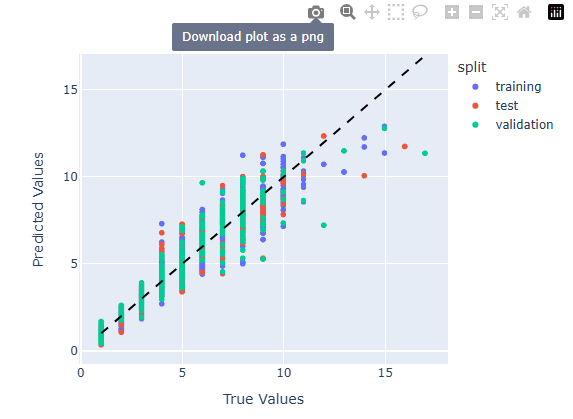

Using the Application
The layout
Preparing to run models
The app components are ordered to go left right / top to bottom, usually in the order you would modify them in a typical workflow.
At the very top, we have a few buttons. The first is a link to go to the home page (NOTE TO SELF, may deprecate if move to one page app), a link to the documentation (this website), and in the right we have the git versions and buttons with links to the git repos.
In the top left, we have the data upload / select pane. You can browse through existing datasets in the app or upload further datasets.
The datasets will do different things depending on which ‘mode’ is selected.
To the right, once one or more datasets are selected, options are available in the Data Columns pane. This allows for selection of which columns will be considered in the model run event. Depending on mode and the dataset(s) selected, you will have different options here and your choices will result in different behaviors (see more details in Data Columns section)
To the right of that, you have options for parameterization. Within this pane, you can choose parameters for signal processing,
parameters specific to the mode,
and parameters specific to the training/fine-tuning approach.

Once all of these sections have been considered, you can run the particular model event (will vary depending on mode) with the run button.
Running models
The run button will execute the model run event based on the parameters provided in the aforementioned sections.
While the model is running, there is an intermediate app stage where you will be provided live information. The run button will display as a loading icon during training. Jobs cannot be canceled once started (NOTE: maybe can change if move to single page app?). To the left of the run button is logging information for the algorithm process.

To the right is a live display of the training loss and validation loss, used to assess the appropriate degree of model fitting and help select a resonable training time or early stopping criterion.

While model training is ongoing, the numner of concurrent tensorflow jobs in the top bar will increment up by one. This is a global value shared between all users currently training models on the server, and exists to help identify if any errors or poor performance could be related to resource contention.
Any errors observed during model training will be displayed in the bottom left, accompanied by a banner error.
Model results
If the model run event has finished without errors, you can scroll down to see outputs relevant to the mode selected.
In the center section are stats and graphical artifacts demonstrating model behaviors and performance. Depending on whether truth ages were provided, this will show a truth vs prediction scatterplot, a histogram, or both if age data are partially provided. Color values will indicate splits if in training or fine tuning mode, or dataset name if in inference mode.
While also mentioned as a live feedback source while running models, the completed training loss curve is available in the top right. Note that all embedded visualizations have built in features such as allowing zooming, hovering points for more precise values, and saving views as an image directly.
On the left are the parameters used for the completed run. There are also two fields where you can add some descriptive information on the run: a name and a description, which are metadata which are attached to exported objects once provided.
On the right are a few options to export model results. The download results button downloads run outputs (model objects, age predictions, metadata, etc), and the upload trianed model (only available after training or fine-tuning) allows for you to upload a model so it is available for subsequent inference or fine-tuning by any lab users. After upload, it will be immediately available for further workflows using that trained model.
Inputing data
Formatting data
First, you will need to identify the data that you’d like to work with. The technique specifically accepts both spectroscopy data along with other per-otolith biological or spatiotemporal contextual data. The codebase and app use a fairy primitive string matching protocol, and they both make assumptions about what certain columns do based on naming, so remember:
What you name columns matters!
All of the naming conventions are defined at the codebase level, within the file “constants” within the ML codebase. Here are some examples of a few of them at the time of writing:
- IDNAME = “id”
- RESPONSENAME = “age”
- WN_STRING_NAME = ’wn**’
- SPLITNAME = “split”
This means that the codebase and application will give columns with these names special treatment, and so when preparing data you will need to be very aware when you need to name your dataset with on of these columns. Here are their definitions:
id: a unique identifier that should be globally unique to the specific otolith. Keeping the id specific to the identity of the otolith is important, as when many datasets are being used for training there are filters within the app to ensure that incidental duplicate values that lead to dataset contamination and comprimised results are not present The contents are not as important, this could be a path to an image, an integer key, a hash, etc.
age: this is the response variable, and while it is not necessary to include in every dataset (such as when this is not available and should be predicted with inference in the app), it is needed for model training or fine-tuning. The app will be flexible if the age column is provided but ages are only available for certain rows- for these datasets, mark missing ages as NA.
wn**: this is the syntax that wav numbers should correspond to. The app will assume any column with characters containing ‘wn’ (note to self, this is a good back end improvement, should just match to start of string) is a wav number column. The numbers should directly follow the ‘wn’ prefix, so a value 8000 would be specified as “wn8000”. Decimal values are ok, ie wn8000.0023. The wav numbers can be in ascending or decending order but must be consecutive (cannot have other biological/spatiotemporal columns interspersed between them), and where they are located in the dataframe does not matter. (note to self: test all these assumptions, reduce if more permissive than remembered)
split: OPTIONAL: this is defined if you would like to define custom training splits during training. If you do want to define training splits, you must define this columns with the exact categories “training”,“validation”,“test” (you may leave out one or two of these as desired). You can also define this column, and within the app still specify app generated splits as desired.
In addition to these specific values, there is also a registry of ‘standard variables’, which help combine like data between different groups and also contain information about the type of data which help for how the application treats these data types. Here is an example of how these are defined:
STANDARD_COLUMN_NAMES = {IDNAME:{‘data_type’:‘unq_text’}, SPLITNAME:{‘data_type’:‘int’}, ‘catch_year’ : {‘data_type’:‘int’}, ‘catch_month’: {‘data_type’: ‘int’}, ‘catch_day’: {‘data_type’: ‘int’}, ‘sex’ : {‘data_type’:‘categorical’}, RESPONSENAME : {‘data_type’:‘numeric’}, ‘latitude’ : {‘data_type’:‘numeric’}, ‘longitude’ : {‘data_type’:‘numeric’}, ‘region’: {‘data_type’: ‘categorical’}, ‘fish_length’: {‘data_type’: ‘numeric’}, ‘fish_weight’: {‘data_type’: ‘numeric’}, ‘otolith_weight’: {‘data_type’: ‘numeric’}, ‘gear_depth’: {‘data_type’: ‘numeric’}, ‘gear_temp’: {‘data_type’: ‘numeric’} }
In the above, declaring categorical variables will allow for instance the application to automatically apply one-hot encoding to these variables. (note to self, this is a good back end improvement, define UNITS in this structure)
***NOTE: there is also a sneaky/unexpected behavior to watch out for. The codebase relies on a simple string match to determine whether a column represents a ‘one-hot-encoded’ column once the one hot encoded categorical column has been expanded into multiple columns. This is essential a reserved sequence of characters, that if they conflict with column names may result in adverse behaviors. The reserved sequence of characters is defined in the [“constants”] file (https://github.com/noaa-afsc/ftnirs-ml-codebase/blob/main/ftnirsml/constants.py) within the ML codebase, as ONE_HOT_FLAG. This should be kept static while data are in training cycles to allow for consistency of how these one-hot-encoded columns are treated.
For some examples of properly formatted data, you can refer to sample datasets in the tests folder of the ML codebase.
How and if to split up data
There are two different different philosophies to provide data to the app. One is with larger, expansive datasets meant to cover large portions of your dataset. These should be named and curated for keeping in the app for continuous reuse and shared use.
Additionaly, you can split up datasets for more specific experiments involving varying along spatiotemporal groupings. While the app will allow you to aggregate data for processing in common, it does not contain features to split up larger datasets into smaller components (it does, however, allow you to select which columns you’d like to consider in a given model run event). If you are doing a yearly model inference/update workflow, you may choose to load data in different temporally bounded datasets (data_2016.csv, data_2017.csv, etc) which will allow for fine grain control of which to include or leave out. If you are interested in performing experiments over geospatial differences (data_GoA.csv, data_Ber.csv) this is another way you can split up data.
The app will flag and reject if there are multiple datasets that contain and equal id, to avoid dataset contaminiation issues during training that will comprimise results. It will do this at time of model training, meaning that datasets splitting up the same data in different ways can go into the application simultaneously. With many different possible ways to split up and organize data prior to the app, datasets of this style are best managed for short term use, and will need to get cleared out periodically by site admins to keep the number of total datasets to resonable levels in the dropdowns (***NOTE to self: this is a good QoL feature: temporary datasets.).
Loading datasets into the application
To upload data into the app, use the upload button in the top left.
Detailed section by section
Select Datasets
This section allows you to select from previously uploaded data and upload new datasets. Any .csv file will be accepted, and the app will attempt to use certain columns based on exact matches to naming convention. Depending on the mode, the purpose of the dataset will be variable. For most downstream operations, datasets are used as a vertically concatenated (think ‘rbind’ in R) combination of all the selected datasets. Output data will use names and unique hashes of these component datasets for record keeping and more detailed breadowns outside of the app.
See next section for how these selected datasets are used for the different modes.
Select Mode
ML models that fit the application native format can be directly uploaded. See examples of use of the ML codebase, including the case where you convert an existing model into the compatible application model format. For inputting models generated through the application, simply path to the output .keras.zip file downloaded from a previous training event.
The datasets you have selected will function differently depending on what mode you select:
- If ‘training’ is selected, the selected dataset(s) will function as training data.
- If ‘inference’ is selected, the selected dataset(s) will function as data upon which inference is applied (output statistics will use existance of ‘age’ if available, otherwise will report histogram of output ages)
- If ‘fine-tuning’ is selected, the selected dataset(s) will function as data for which the model is fine tuned on.
Training Mode
The training mode is used when a new model is being trained using a combination of user selected training data (indicated in the data selection pan in the top left) and a given techinique (“approach”). The “basic model” approach is a simple and minimal archetecture that is customizable in parameters and is trained in a single training event. The hyperband algorithm is a more sophisticated orchestration technique where model archecture is ‘tuned’ to optimize performance over a sequence of optimization rounds.
These approaches are defined in the ML codebase, and must be encorporated into the application code itself. The application code has been designed so addition of additional approaches is straightforward.
Inference mode
The inference mode is used when a previously trained model exists, and you wish to apply it to a different dataset. The inference mode will take this chosen model and attempt, if compatible, to apply it to the user selected training data (indicated in the data selection pan in the top left). Note that the application will aggressively attempt to make datasets compatible, so pay attention to any information provided in the model metadata as well as in the data pane. Datasets run for inference can include the response column. If the response column is provided, R2 scores will be provided, if not, a histogram of ages with be provided, and if ages are partially known, both will be provided.
When a trained model is selected, the app will display any available metadata. This can help assess compatibility with different datasets. This also includes metadata on any description given to the model (good practice is to discuss the training data used), as well as other information relevant for fine-tuning.
Fine-tuning mode
The fine-tuning mode is used when a previously trained model exists, and you wish to retain some information from the previous weights while ‘fine-tuning’ it on another dataset. This is an operation that takes some nuance, especially considering the shallow depth of most of these models which make it very easy to discard existing weights if number of training epochs and learning rate (NOTE to self: is this even in here? Add??) is not chosen carefully.
The model metadata contains information relevant for fine-tuning, including the max_bio_columns, which is relevant for fine-tuning as it represents the total amount of non-wavenumber columns supported by the model archetecture for further fine-tuning. If the number of non-wavenumber columns exceeds this value, further retraining will not be possible.
Data Columns
The data columns pane is responsive to both:
- The column names in the selected datsets, and
- The mode selected
The data pane will display the following information:
- Whether a given data column is selectable (optional) for the particular mode. Columns that are not selectable will generally say why.
- Wav numbers and spectrography attributes for each different dataset, as well as if they are ‘valid’ (fit the criteria for wn** columns and are formatted correctly), and equivalent (how many match the same spectroscopy settings)
- Whether columns match known reserved names (id, split, age), Standard Column names, or other.
- The number of datasets where the particular column is included.
- Any special treatment of that particular column. This can include:
- treated as a reserved column name (unselectable- automatically used)
- one hot encoding was applied (default for standard columns marked as ‘categorical’ type)
- information on whether or not columns present in a selected model archetecture are present in provided datasets.
Training Mode
The data pane will provide the above information, and should be fairly self explanatory. Data that are unselected will not be used to train the model. You may choose to unselect or retain partial matches between the different selected datasetes. Sometimes, it may help to remove partial matches for more consistent model performance between different datasets, whereas conversely it may help optimize for performance to leave certain partially available columns in.
Inference Mode
When a trained model is selected, and there are differences between the data columns used to train the model and the data columns available in the selected dataset, the application will unselect the data columns as an option without options to reselect, and state why. This could be either that:
- the column is included in pretrained model (but absent from dataset)
- the column is not used in pretrained model (but present in dataset)
For data columns that are present in both the dataset(s) and pretrained model, it will be optional to include them. When the data are fully available, you would usually elect to include available data that match the trained model. In cases where the selected datasets partially match what the model has available, you may prefer to remove a partially available column to allow for more equal treament by the model among the datasets. You can also choose to unselect certain data for experimental reasons (for example, to simulate the effect of a potentially absent data column in the future).
Fine-tuning Mode
For the fine-tuning mode, the Data Column section is a mix of the behaviors of training and inference. The model archetectures on first training are hardcoded (NOTE: for now) to provide a maximum of 100 biological/geospatial/temporal features for future trainings, allowing the same weights to be preserved while being flexible to dynamic data availability. This means that datasets that are now available for retraining will be possible to include even if not present in the original model. The Data Column pane will flag standard columns which, like in inference, are either present on the model archetecture and absent in the data (included in pretrained model), but will also provide this message when columns in the dataset are included in the pretrained model to help distinguish and clarify decisions when it comes to choosing to include/exlude new data or data already present in the model during retraining.
Both inference and fine-tuning will flag if a column was NULLIFIED in the last training event, meaning, the biological/geospatial/temporal data was named and included some point in the model training, but in the latest round was given a dummy value to deprioritize it for retraining. For inference, a column currently nullified shouldn’t be used except for experimental reasons. NULLIFIED columns can be added back in as desired for fine-tuning, but care should be taken when reintroducing it as performance impacts can be unpredictable.
Select Parameters
The Select Parameters section allows you to define relevant parameters for the model run event. This is broken down into three component sections: signal processing parameters, mode parameters, and approach parameters. Some number of these are applicable for each mode, and the way each component section is interfaced with changes depending on the selected mode.
Signal processing parameters
This section is where signal processing algorithms are selected. These can only be changed in a new training event.
Interpolation can be set to custom bounds to promote interoperability in future use, otherwise it will default to the minimum and maximum values present in the training dataset.
During inference or retraining, this section shows the preset parameters which will be applied to the model run but are unchangeable. If the wav numbers have different attributes (start, end, step), 1d interpolation will be applied to attempt to make the signal compatible.
Mode parameters
Mode parameters are generic to a specific mode: training, inference, or fine-tuning. Training options include a seed (to help ensure reproduceable initial random weights), custom defined splits, number of epochs, and early stopping parameters (note that manual early stopping is not currently supported).
Currently, there are no parameters specific to inference.
Approach parameters
Mode parameters are generic to a specific training approach. Approaches are meant to expand and vary to cover different resonable scientific approaches to model training. The parameters vary depending on the approach, and when developing new approaches, you can define these using a special data structure in the ML codebase to avoid having to develop the front end code to encorporate them (TRAINING APPROACHES variable in the “constants” file within the ML codebase)
Stats and graphical artifacts
After a model run event, some performance feedback will be provided back in form of stats and graphical artifacts. What you get varies on a few conditions:
Training/fine tuning: you will get back performance stats grouped down by split. The performance stats will include n, r2, loss, mse (mean square error) and mae (mean average error). Generally r2 is your most informative feedback, and differences in r2 between the different splits can be used to quickly assess whether underfitting or overfitting has taken place (along with the training graph to the right of the run button). These modes will always produce a scatterplot of true age values vs. predicted values, allowing for more detailed information on performance bias and variance across the age range.

Inference: If truth ages are provided when inference is run, inference will produce performance stats just like in training/fine-tuning. the data will now be grouped by component dataset, as split is not used during inference. (NOTE to self: should probably have stats breakdown at dataset level as well in this case?)

If not, it will produce a histogram of ages (NOTE to self: in unaged case, should probably still be grouped by dataset?).
If you have some ages provided and some ages missing in your training dataset, you will get both graphics.

Graphical outputs need to be downloaded individually as needed: they are not retained in the bundle of downloaded artifacts, although the information is there to recreate them as needed. Click in the top right option on any interactive figure to download it.

Statistical outputs are available as part of the standard downloaded results. All figures and stats can be recreated with downloaded datasets.
Download Results
The download results option will download to your local PC a bundle of files that are useful for quantifying performance, supporting more sophisticated downstream analysis, using the trained model outside of the application, and tracking versioning.
When you download the data, it will save a bundle of file within a tar.gz format file.
You can use a tool like winzip or 7zip to unpack it locally as a directory. The included files are:
- stats.csv: the model run stats.
- [model_name].keras.zip: this is the model object with bundled metadata which is interoperable withe the apcation and ML codebase. The [model_name].keras.zip object can be further unpacked to extract the keras model and metadata, but the .zip file itself is used by both of these tools as the standard formatted model object. (see more information on working with this format in the ML codebase section LINK). This will match the name provided by you in the app, if provided, otherwise it will be ‘unnamed.keras.zip’.
- ml_formatted_data_plus_untransformed_ages.csv: this is a dataset which includes the data as formatted prior to the model run event. It also includes untransformed ages. This allows you to understand the actual dataset that the model was trained on (includes formatting / post processing like, one hot encoding, applied scalers, interpolation, etc). This table also contains hashes to uniquely identify different component datasets, to allow for tracking assumptions of data used over time. This is the primary data object that should allow you to better understand the model behavior via the formatted dataset, do more sophisticated analysis of prediction performance downstream, and troubleshoot unexpected or undesireable behaviors.
- config.yml: this contains parameter selections for the model run event.